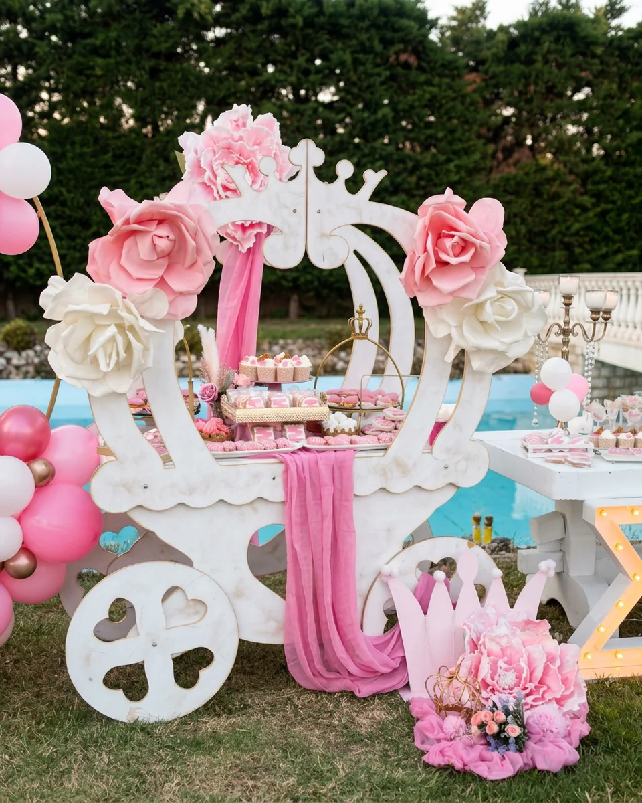
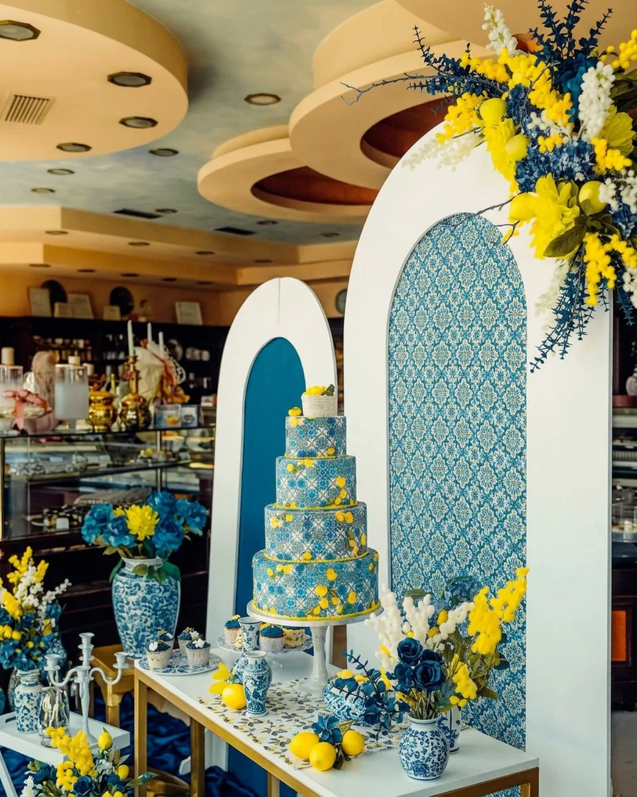
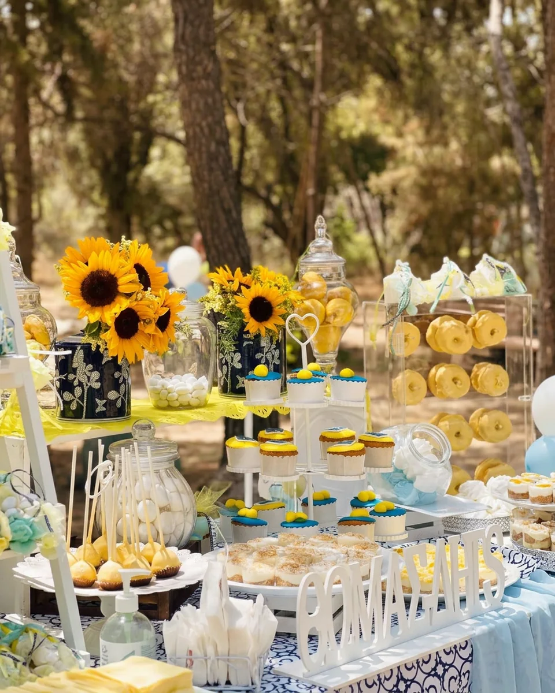
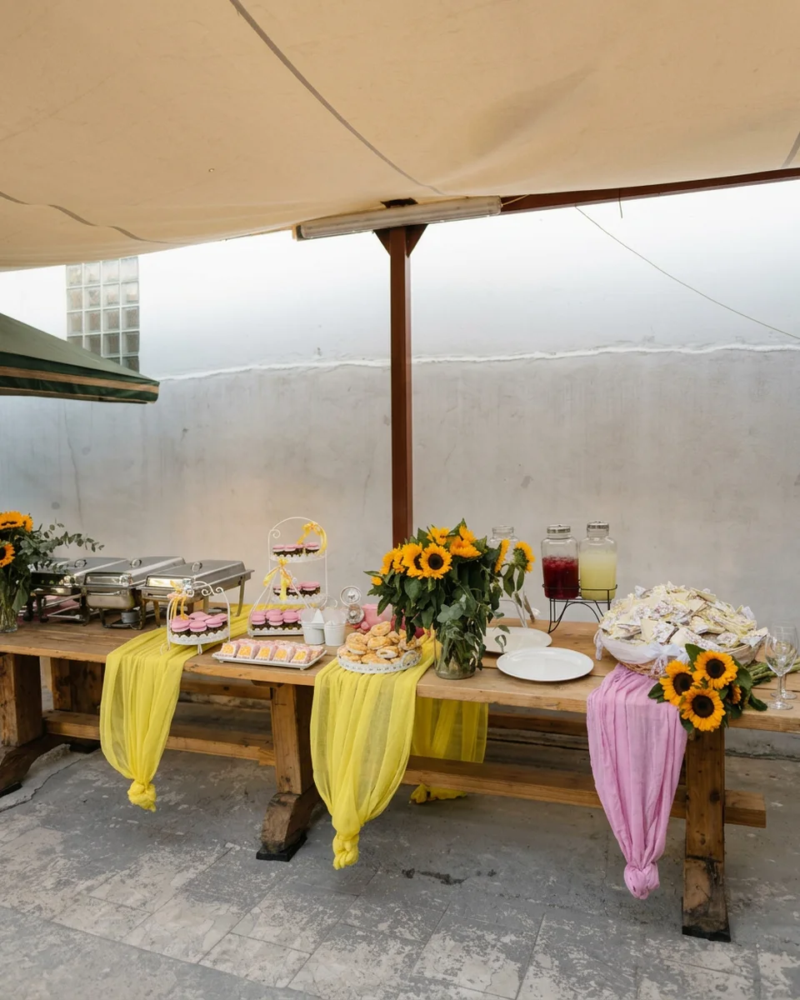
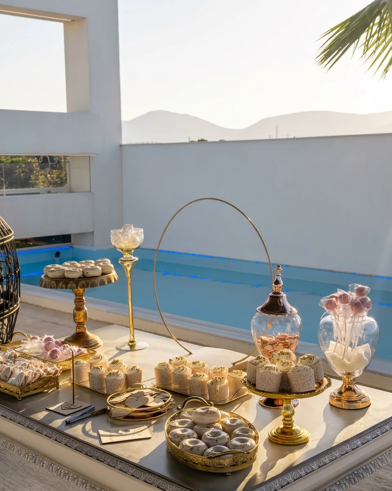

Maron Events
Candy & Salty Bars
Μια παραμυθένια γωνιά με γλυκές και αλμυρές δημιουργίες, στο θέμα και στα χρώματα της γιορτής σας.
Candy Bar από το Μαρόν: Δημιουργούμε τις πιο γλυκές αναμνήσεις!
Στο Μαρόν, κάθε Candy Bar είναι μοναδικό, όπως και η εκδήλωσή σας. Εμπνεόμαστε από το όραμά σας και δημιουργούμε μια παραμυθένια γωνιά γεμάτη γεύσεις, χρώματα και αρώματα που εντυπωσιάζουν. Από cake pops, cupcakes, μπισκότα ζαχαρόπαστας και ατομικά προφιτερόλ μέχρι marshmallows, ζαχαρωτά και πολλά ακόμη, φροντίζουμε να καλύψουμε κάθε γευστική σας επιθυμία.
Η ομάδα μας αναλαμβάνει να σχεδιάσει και να διακοσμήσει το Candy Bar σας, προσαρμόζοντας κάθε λεπτομέρεια στο θέμα που έχετε επιλέξει. Είτε πρόκειται για βάπτιση, γάμο, πάρτι γενεθλίων ή οποιαδήποτε άλλη ιδιαίτερη περίσταση, δημιουργούμε ένα σκηνικό που θα ενθουσιάσει μικρούς και μεγάλους.
Με προσοχή στη λεπτομέρεια και έμφαση στην υψηλή ποιότητα, το Candy Bar σας δεν θα είναι μόνο γευστικό, αλλά και μια αληθινή διακοσμητική «έκπληξη» για τους καλεσμένους σας. Αφεθείτε στη φαντασία μας και δείτε την εκδήλωσή σας να μεταμορφώνεται σε μια αξέχαστη εμπειρία.
Candy Bar
Candy & Salty Bar
Στο Μαρόν, κάθε Candy Bar δημιουργείται με βάση το θέμα και τα χρώματα που έχετε επιλέξει για τη βάπτιση ή την εκδήλωσή σας. Οι καλεσμένοι σας θα απολαύσουν μια πλούσια ποικιλία από λαχταριστές γεύσεις, φτιαγμένες με μεράκι και τα πιο αγνά υλικά. Από χειροποίητα μπισκότα και εντυπωσιακά cupcakes, μέχρι χρωματιστά cake pops, λαχταριστά macarons, αφράτα mini donuts, γλυκά σφηνάκια με μοναδικές γεύσεις και ατομικά γλυκά σε κομψές συσκευασίες – οι επιλογές μας ικανοποιούν κάθε γούστο.
Αναλαμβάνουμε επίσης να σας δροσίσουμε με σπιτικές λεμονάδες και άλλες φρέσκες επιλογές, ενώ για όσους προτιμούν το αλμυρό, μπορούμε να εμπλουτίσουμε το Candy Bar σας με ξεχωριστές αλμυρές δημιουργίες. Κάθε λεπτομέρεια σχεδιάζεται για να ταιριάζει απόλυτα στο στυλ της εκδήλωσής σας, δημιουργώντας ένα οπτικά και γευστικά εντυπωσιακό αποτέλεσμα. Εμπιστευτείτε την ομάδα μας για να μετατρέψουμε τη βάπτισή σας σε μια αξέχαστη εμπειρία που θα μείνει χαραγμένη στη μνήμη όλων!
Καροτσάκι Παγωτού
Για τους λάτρεις του παγωτού, το Μαρόν σας προσφέρει ένα μοναδικό καροτσάκι γεμάτο δροσερές γεύσεις που θα ενθουσιάσουν τους καλεσμένους σας. Χειροποίητο παγωτό φτιαγμένο με φρέσκα υλικά, σε ποικιλία γεύσεων, ιδανικό για να προσθέσει μια γλυκιά και δροσερή πινελιά στην εκδήλωσή σας.
Το καροτσάκι παγωτού μας είναι τέλεια επιλογή για γάμους, βαπτίσεις, πάρτι και εταιρικές εκδηλώσεις, προσφέροντας όχι μόνο απολαυστικές γεύσεις αλλά και μια ξεχωριστή αισθητική που θα τραβήξει τα βλέμματα. Αφήστε μας να δημιουργήσουμε ένα άκρως δροσιστικό σκηνικό που θα κάνει τη μέρα σας ακόμα πιο ιδιαίτερη!
Chill & Treat Corner
Δώστε μια δροσερή και γλυκιά νότα στην εκδήλωσή σας με το Chill & Treat Corner του Μαρόν. Προσφέρουμε δροσιστικά ποτά, όπως φρεσκοστυμμένες λεμονάδες και αρωματικά αναψυκτικά, συνδυασμένα με λαχταριστές γλυκές λιχουδιές που θα εντυπωσιάσουν τους καλεσμένους σας.
Η φρεσκάδα και η ποιότητα των επιλογών μας κάνουν τη διαφορά, δημιουργώντας μια γευστική εμπειρία που ξεχωρίζει. Ιδανικό για βαπτίσεις, γάμους, πάρτι και κάθε ιδιαίτερη στιγμή, το Chill & Treat Corner θα δώσει μια ευχάριστη νότα στην εκδήλωσή σας, κάνοντάς την αξέχαστη!
Περισσότερα events